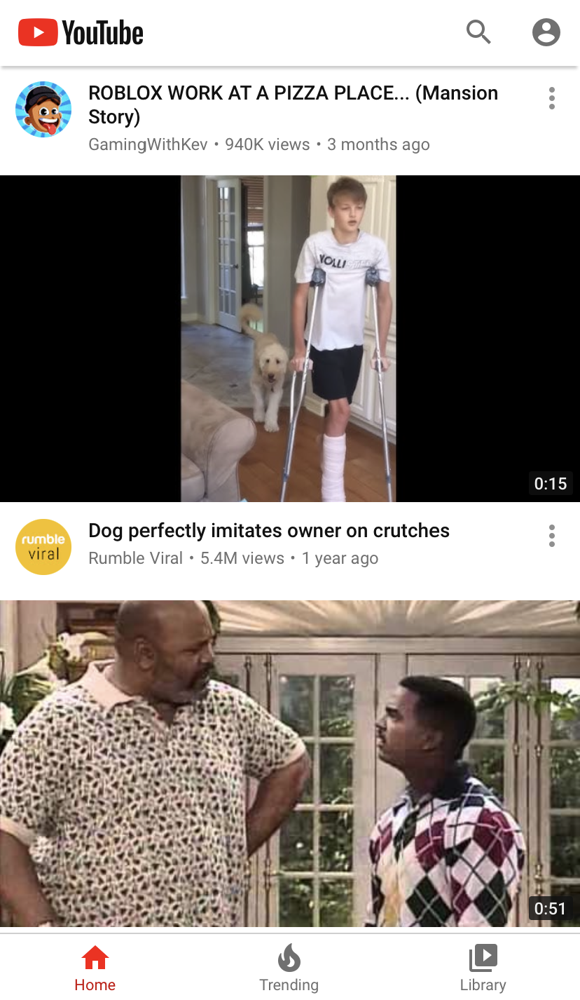
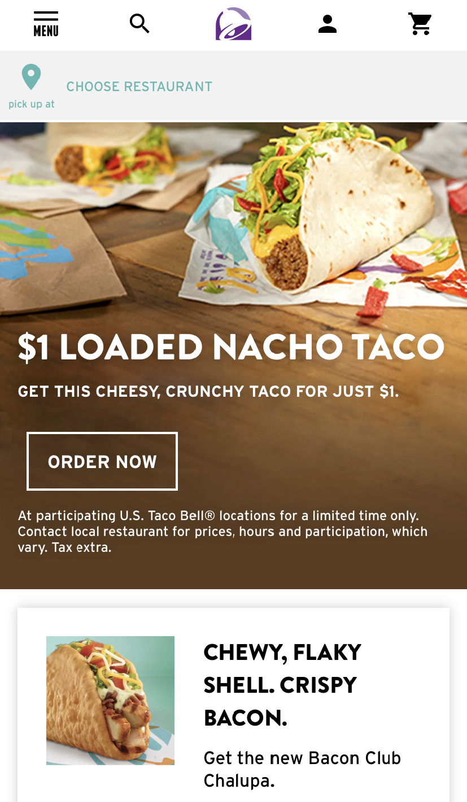
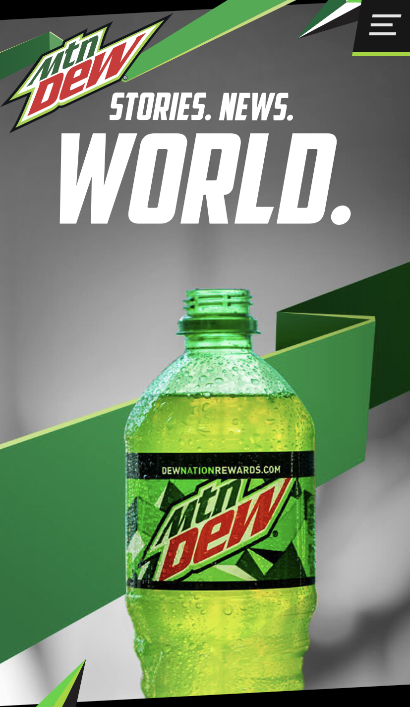

Fitt's Law
Youtube
The youtube website is a perfect example of Fitt's Law. On the website, it is easy to see the videos as they are big and take up much of the website. They even allow you to not only select the video by it's preview image, but by title or even by the author to see their other videos. Youtube wants it's visitors to watch their videos in order to generate ad revenue, so they make it easy for someone to select a video from their homepage and start watching.
Visual Hierarchy
Taco Bell
Taco Bell has a history of pushing certain products that they want to sell. Their website made it very clear how they make use of visual hierarchy to push those products. Here we can see that they would like us to try their Loaded Nacho Taco. They make it colorful, it takes up three quarters of the screen, and right below the big text is a white order now box. This is the first thing that customers will see on the website, in an effort to draw their attention to the item and hopefully persuade the customer to make an order.
Rule of Thirds
Mountain Dew
The Mountain Dew website is full of color like green, red, gray, and lime. More noticeable, however, is their use of the rule of thirds. They advertise most of their beverages on the website with visually pleasing photos, like the one above. You'll notice that the beverage itself is slightly off center and to the right. This makes it stand out more. They also place the logo slightly up and to the right along with a catchy phrase "Stories. News. World" on the top third of the photo. All of their photos make use of space similarly with the Mountain Dew Sodas not being directly placed in the center and good use of the horizontal and vertical lines that create the rule of thirds.